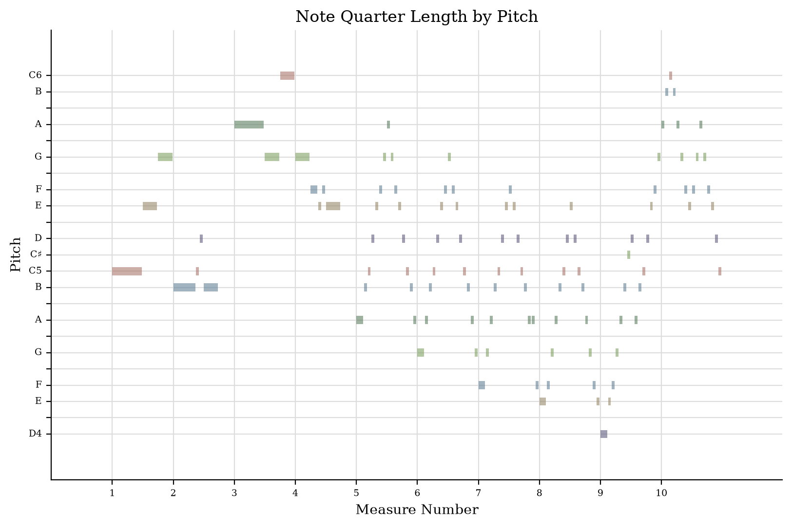
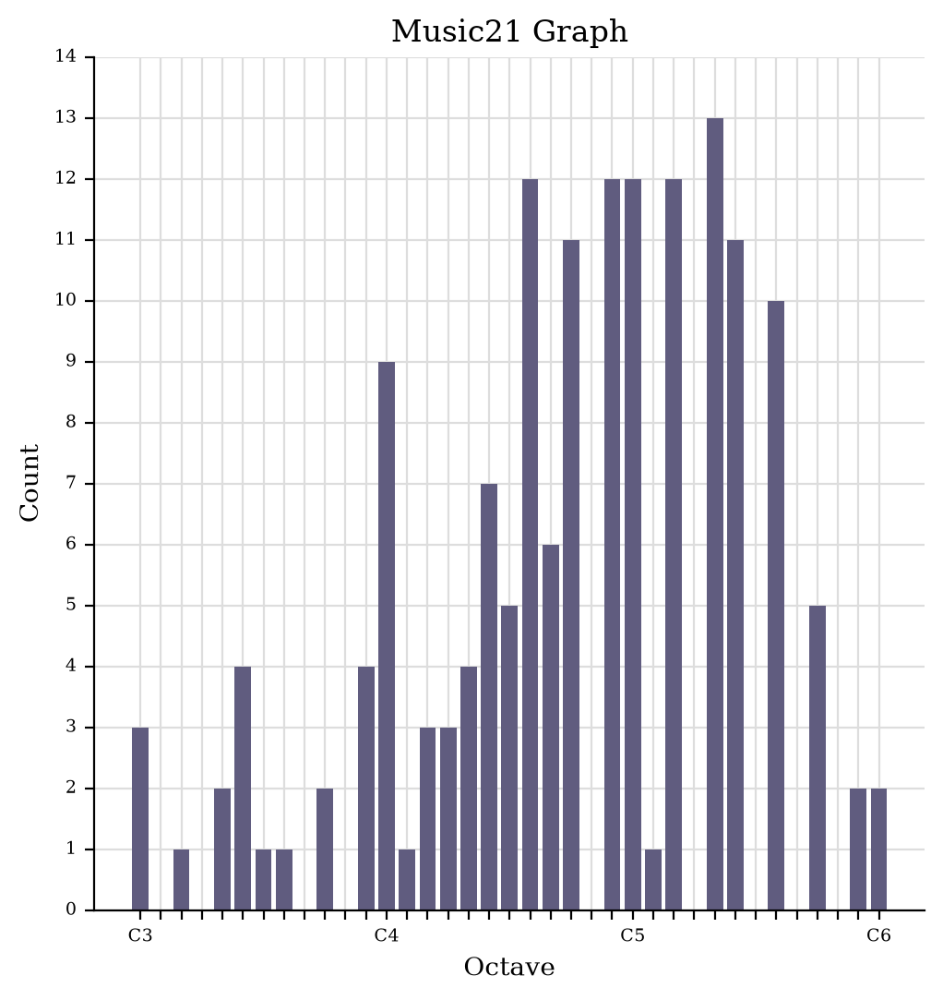
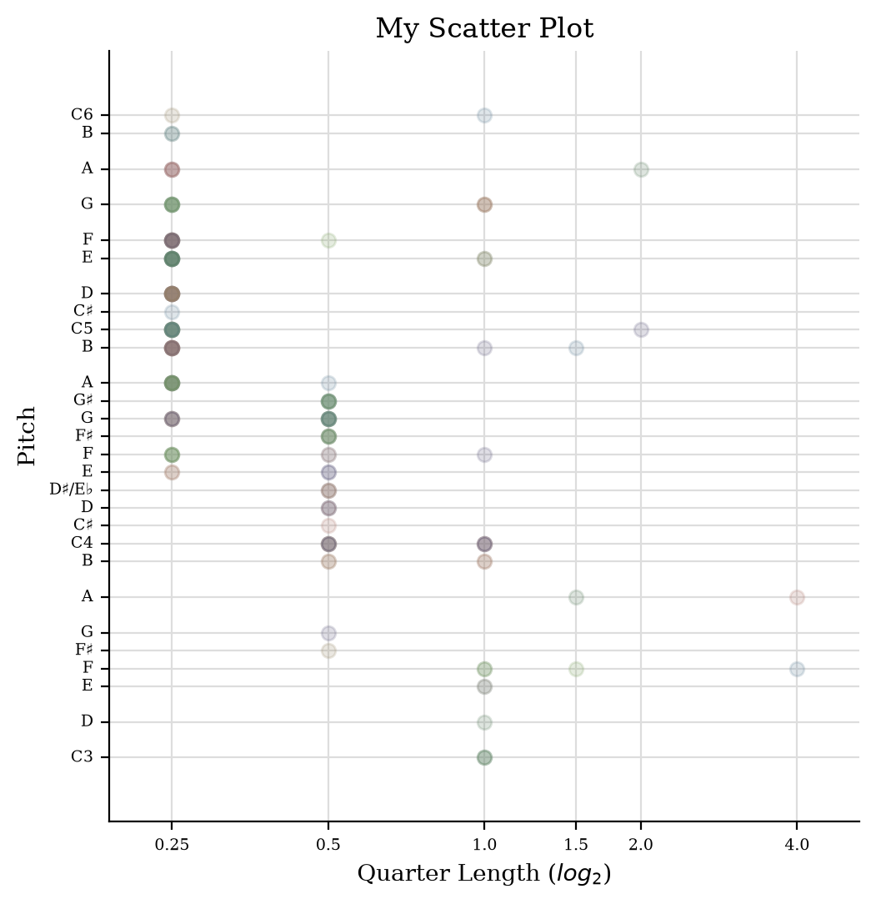

For this task, I used music21 to create different visualisations of my piece.

The piano roll shows where different pitches appear throughout the piece. Most of the notes are in the middle register, although there are also some higher and lower notes.

The pitch histogram shows how often each pitch appears. The graph suggests that notes around the middle register are used most frequently.

This graph compares pitch with note length. Most of the notes have fairly short durations, while longer notes appear less often.